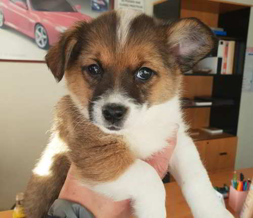

Bolota
Bolota é um filhote de 5 meses, vacinado e não castrado. Perfeito para quem quer um cachorrinho que possa ser adestrado, esse filhote precisa de muito espaço pois na idade adulta pode chegar a atingir entre 25 e 30 kg, já que ele possui uma miscigenação com a raça terra nova. Bolota será um grande companheiro para adultos e crianças.
Adotar